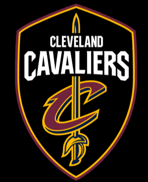

Cavaliers
The Cleveland Cavaliers, often referred to as the Cavs, are an American professional basketball team based in Cleveland. The Cavaliers compete in the National Basketball Association (NBA) as a member of the league's Eastern Conference Central Division. The team began play as an expansion team in 1970, along with the Portland Trail Blazers and Buffalo Braves. Home games were first held at Cleveland Arena from 1970 to 1974, followed by the Richfield Coliseum from 1974 to 1994. Since 1994, the Cavs have played home games at Rocket Mortgage FieldHouse in downtown Cleveland, which is shared with the Cleveland Monsters of the American Hockey League. Dan Gilbert has owned the team since March 2005.
The Cavaliers opened their inaugural season losing their first 15 games and struggled in their early years, placing no better than sixth in the Eastern Conference during their first five seasons. The team won their first Central Division title in 1976, which also marked the first winning season and playoff appearance in franchise history, where they advanced to the Eastern Conference Finals. The franchise was purchased by Ted Stepien in 1980. Stepien's tenure as owner was marked by six coaching changes, questionable trades and draft decisions, and poor attendance, leading to $15 million in financial losses. The Cavs went 66–180 in that time and endured a 24-game losing streak spanning the 1981–82 and 1982–83 seasons.
LeBron Raymone James Sr. (/ləˈbrɒn/; born December 30, 1984) is an American professional basketball player for the Los Angeles Lakers of the National Basketball Association (NBA). Widely considered one of the greatest NBA players in history, James is frequently compared to Michael Jordan in debates over the greatest basketball player of all time. Playing for the Cleveland Cavaliers, Miami Heat, and Los Angeles Lakers, James is the only player in NBA history to have won NBA championships with three franchises as Finals MVP. He has competed in ten NBA Finals, including eight consecutive with the Heat and Cavaliers from 2011 through 2018. His accomplishments include four NBA championships, four NBA Most Valuable Player (MVP) Awards, four Finals MVP Awards, and two Olympic gold medals. During his 17-year career, James holds the record for all-time playoffs points, is third in all-time points, and eighth in career assists. James has been selected to the All-NBA First Team a record 13 times, made the All-Defensive First Team five times, and has played in 16 All-Star Games, in which he was selected All-Star MVP three times. James played basketball for St. Vincent–St. Mary High School in his hometown of Akron, Ohio, where he was heavily touted by the national media as a future NBA superstar. A prep-to-pro, he was selected by Cleveland with the first overall pick of the 2003 NBA draft. Named the 2003–04 NBA Rookie of the Year, he soon established himself as one of the league's premier players, winning the NBA MVP Award in 2009 and 2010. After failing to win a championship with Cleveland, James left in 2010 to sign as a free agent with Miami. This move was announced in an ESPN special titled The Decision, and is one of the most controversial free agent decisions in sports history. James won his first two NBA championships while playing for the Heat in 2012 and 2013; in both of these years, he also earned league MVP and Finals MVP. After his fourth season with the Heat in 2014, James opted out of his contract to re-sign with the Cavaliers. In 2016, he led the Cavaliers to victory over the Golden State Warriors in the NBA Finals by coming back from a 3–1 deficit, delivering the franchise's first championship and ending Cleveland's 52-year professional sports title drought. In 2018, James opted out of his contract with the Cavaliers to sign with the Lakers, where he won the 2020 championship and was awarded his fourth Finals MVP. Off the court, James has accumulated additional wealth and fame from numerous endorsement contracts. He has been featured in books, documentaries, television commercials (including winning a Sports Emmy Award for a documentary as an executive producer), and has hosted the ESPY Awards (including winning 19 ESPY Awards in his own right) and Saturday Night Live. In 2015, he appeared in the film Trainwreck. As a part-owner of Liverpool F.C. since 2011, James has a Premier League championship to his credit, with the club having won the 2020 title. Having become more involved in philanthropic and activist pursuits later in his career, James' charitable organization (LeBron James Family Foundation) helped open a school, housing complex, and community center/retail plaza in his hometown of Akron.
 Collin Darnell Sexton (born January 4, 1999) is an American professional basketball player for the Cleveland Cavaliers of the National Basketball Association (NBA). He played college basketball for the Alabama Crimson Tide. In January 2017 Sexton was selected as a McDonald's All-American. He was selected with the 8th pick in the 2018 NBA draft by the Cavaliers.On June 21, 2018, Sexton was selected with the eighth overall pick by the Cleveland Cavaliers in the 2018 NBA draft. He was the highest-selected player from Alabama since Antonio McDyess in 1995. On July 6, 2018, Sexton made his NBA Summer League debut. He recorded 15 points to go along with 7 rebounds.On October 17, 2018, Sexton made his NBA debut, coming off the bench for the Cleveland Cavaliers with nine points and three rebounds in a 104–116 loss to the Toronto Raptors.On November 24, 2018, Sexton scored a then career high 29 points against the Houston Rockets in a 117–108 victory. On December 9, 2018, he scored a season-high 29 points against the Washington Wizards in a 116–101 victory.On March 8, 2019, Sexton passed Kyrie Irving for 3 pointers made as a Cavs rookie with 76 against the Miami Heat. He also eclipsed 1,000 career points. On March 11, 2019, Sexton had 28 points against the Toronto Raptors in a 126–101 victory, to go along with 5 assists and 4 rebounds. In the week of March 8, 2019, Sexton had the best week of his rookie campaign, averaging 26.0 points, 3.8 assists, and 2.5 rebounds. During a stretch from March 8 to March 22, he became the first rookie to score 23+ points in seven consecutive games since Tim Duncan in 1998, as well the only rookie in franchise history to successively score at least 23 points. Additionally, he is the only rookie in NBA history to have played at least 2,000 minutes while scoring over 16 points per game on over 40% 3-point accuracy and fewer than 3 turnovers. He was named to the Rising Stars Game at the 2020 NBA All-Star Weekend as a replacement for injured Miami Heat rookie Tyler Herro,where he put up 21 points, 5 rebounds and 3 assists for Team USA.
Collin Darnell Sexton (born January 4, 1999) is an American professional basketball player for the Cleveland Cavaliers of the National Basketball Association (NBA). He played college basketball for the Alabama Crimson Tide. In January 2017 Sexton was selected as a McDonald's All-American. He was selected with the 8th pick in the 2018 NBA draft by the Cavaliers.On June 21, 2018, Sexton was selected with the eighth overall pick by the Cleveland Cavaliers in the 2018 NBA draft. He was the highest-selected player from Alabama since Antonio McDyess in 1995. On July 6, 2018, Sexton made his NBA Summer League debut. He recorded 15 points to go along with 7 rebounds.On October 17, 2018, Sexton made his NBA debut, coming off the bench for the Cleveland Cavaliers with nine points and three rebounds in a 104–116 loss to the Toronto Raptors.On November 24, 2018, Sexton scored a then career high 29 points against the Houston Rockets in a 117–108 victory. On December 9, 2018, he scored a season-high 29 points against the Washington Wizards in a 116–101 victory.On March 8, 2019, Sexton passed Kyrie Irving for 3 pointers made as a Cavs rookie with 76 against the Miami Heat. He also eclipsed 1,000 career points. On March 11, 2019, Sexton had 28 points against the Toronto Raptors in a 126–101 victory, to go along with 5 assists and 4 rebounds. In the week of March 8, 2019, Sexton had the best week of his rookie campaign, averaging 26.0 points, 3.8 assists, and 2.5 rebounds. During a stretch from March 8 to March 22, he became the first rookie to score 23+ points in seven consecutive games since Tim Duncan in 1998, as well the only rookie in franchise history to successively score at least 23 points. Additionally, he is the only rookie in NBA history to have played at least 2,000 minutes while scoring over 16 points per game on over 40% 3-point accuracy and fewer than 3 turnovers. He was named to the Rising Stars Game at the 2020 NBA All-Star Weekend as a replacement for injured Miami Heat rookie Tyler Herro,where he put up 21 points, 5 rebounds and 3 assists for Team USA.